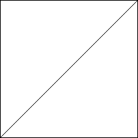
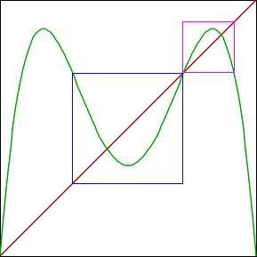

| 1. In this exercise we explore some relations between the behavior of the
logistic map L(x) and its iterate L2(x) = L(L(x)). We shall use
the graphical iteration and the histogram windows. |
| (a) To review the behavior of the logistic map, find s values for which the map
has a stable fixed point, stable 2-cycle, and stable 4-cycle. Write the s-value and
sketch the graphical iteration window. |
| s = | s = | s = |
|  |
|
|
| fixed point |
2-cycle |
4-cycle |
|
| Adjust the composition to 2 and the s-value to about 3.55. Superimposed on the graph
of L2 are two squares, denoted the central square
and the right square. |
|  |
| (b) Adjust the s value so the iterates of an initial point in the central square
converge to a fixed point in the central square, and the iterates of an initial point
in the right square converge to a fixed point in the right square. Recall initial
points can be selected by mouse clicks. Record the s-value. Here is the
answer. |
| (c) Adjust the s value so the iterates of an initial point in the central square
converge to a 2-cycle in the central square, and the iterates of an initial point
in the right square converge to a 2-cycle in the right square. Record the s-value. Here is the
answer. |
| (d) Adjust the s value so the iterates of an initial point in the central square
converge to a 4-cycle in the central square, and the iterates of an initial point
in the right square converge to a 4-cycle in the right square. Record the s-value. Here is the
answer. |
| (e) Adjust the composition back to 1. What cycle for L(x) corresponds to each of the L2
cycles of parts (b), (c), and (d)? Comment on the relations between these cycles for L(x) and those for
L2(x). Here is an
answer. |